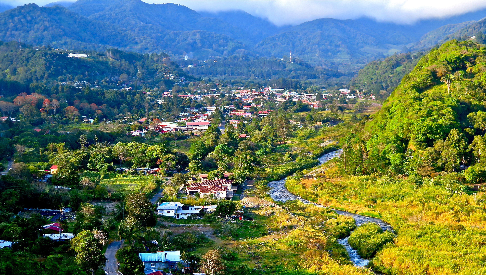

1. Boquete:
Este pintoresco pueblo en las tierras altas de Panamá es famoso por su clima fresco, paisajes montañosos y producción de café de alta calidad. Es un destino popular para el turismo de aventura y la observación de aves.

En esta página se encontrarán palabras con la Letra B relacionadas a lugares, cosas o animales de Panamá, organizando esta información en definiciones e imagenes.
Este pintoresco pueblo en las tierras altas de Panamá es famoso por su clima fresco, paisajes montañosos y producción de café de alta calidad. Es un destino popular para el turismo de aventura y la observación de aves.
Esta provincia ubicada en la costa caribeña de Panamá es conocida por sus impresionantes paisajes costeros, playas de arena blanca, arrecifes de coral y una rica vida marina. Es un destino popular para el ecoturismo y el buceo.
El balboa está vinculado al dólar estadounidense con una paridad de 1:1. Esto significa que un balboa tiene el mismo valor que un dólar estadounidense. Esta relación de paridad garantiza la estabilidad de la moneda y facilita las transacciones.
El Banco Nacional de Panamá es la entidad responsable de la emisión y regulación de la moneda en el país. Además de emitir monedas y billetes de balboa, el banco también supervisa el sistema financiero de Panamá .
Es una isla ubicada en el Lago Gatún, en el Canal de Panamá, y alberga el famoso Instituto Smithsonian de Investigaciones Tropicales. Es un importante centro de investigación científica de la biodiversidad tropical.